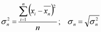
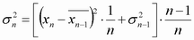
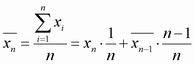

Standard Deviation
The "Standard Deviation" σn indicates the spread of the n values at each measurement point. It is defined as the square root of the variance, which is the mean square of the deviation of the values from their own arithmetic mean.

The variance can be calculated using the following recursive equation:

With the arithmetic mean value:

The formula above is modified for the magnitude error and the phase error, where positive and negative contributions tend to compensate each other. The arithmetic mean value and the standard deviation of these quantities is obtained from the absolute values.